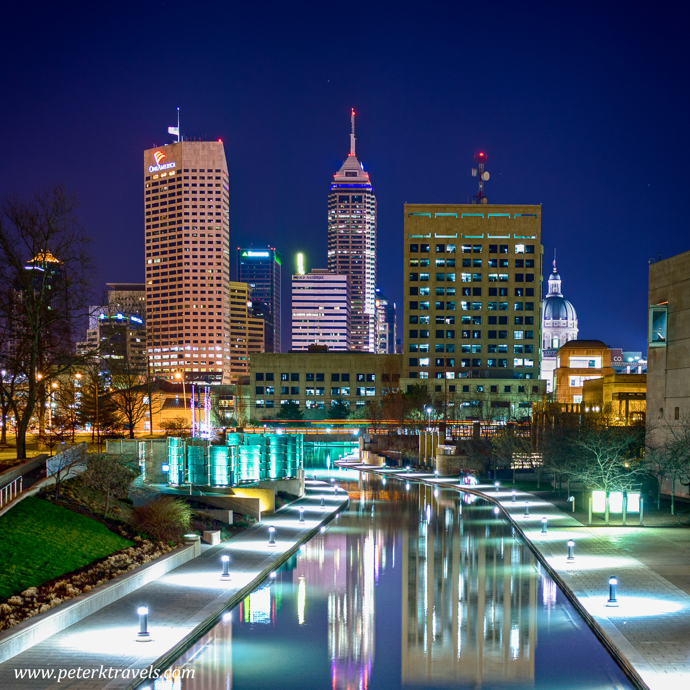
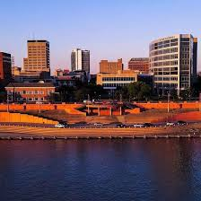
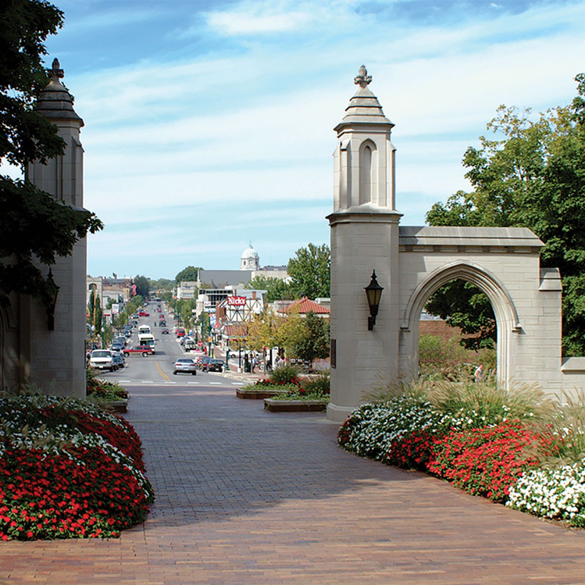
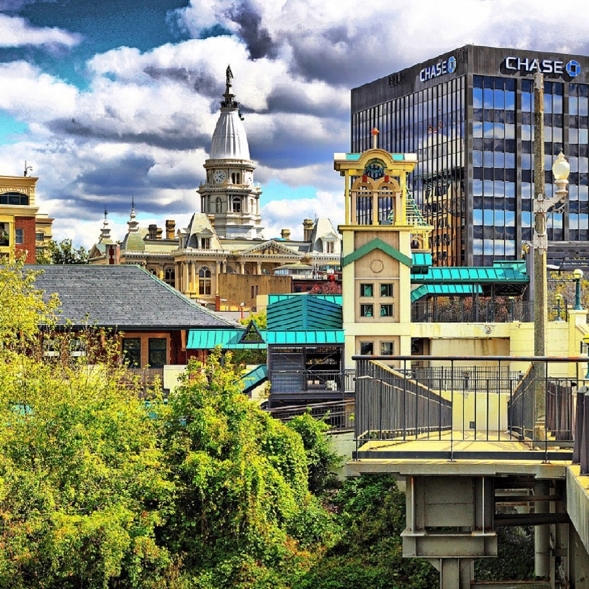
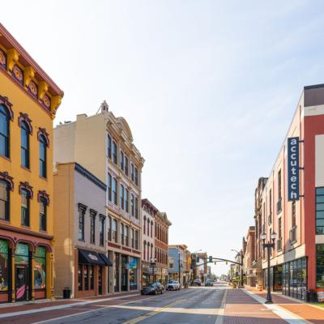

Approximate Population:
Indianapolis, Indiana
Approximate Population:
900,000 (city)
2.1 million (metro)
Attractions
Children's Museum
Indianapolis Zoo
Newfields
Indy 500 (Indianapolis Motor Speedway)
Indiana State Museum
White River State Park
NCAA Hall of Champions
Sporting Events (Pacers, Colts, Fever, Fuel, Indy Eleven)

Fort Wayne, Indiana
Approximate Population:
266,000 (city)
423,000 (metro)
Attractions
Fort Wayne Museum of Art
Fort Wayne Zoo
The History Center
Foellinger-Freimann Botanical Conservatory
The History Center
Science Central
Promenade Park
Sporting Events (TinCaps, Komets, Ft. Wayne FC)

Approximate Population:
Evansville, Indiana
Approximate Population:
120,000 (city)
359,000 (metro)
Attractions
Angel Mounds
LST 325
Children's Museum of Evansville
Evansville Museum of Arts, History & Science
Bosse Field
Evansville Wartime Museum
Sporting Events (Otters, Thunderbolts, Midwest Hooligans)

South Bend, Indiana
Approximate Population:
104,000 (city)
325,000 (metro)
Attractions
Potawatomi Zoo
Studebaker National Museum
The History Museum
Civil Rights Heritage Center
South Bend Chocolate Company
Morris Performing Arts Center
South Bend River Lights
Sporting Events (SB Cubs, SB Lions FC)

Approximate Population:
Bloomington, Indiana
Approximate Population:
80,000 (city)
176,000 (metro)
Attractions
Monroe Lake
Kirkwood Avenue
WonderLab Museum
Hoosier National Forest
Oliver Winery
Tour Indiana University
Pfau Golf Course
The Bluebird

Approximate Population:
Lafayette, Indiana
Approximate Population:
71,000 (city)
224,000 (metro)
Attractions
Columbian Park Zoo
Malibu Jack's
Exploration Acres
Fort Ouiatenon
Prophetstown State Park
Clegg Memorial Garden
Lafayette Aviators
Tour Purdue University
Art Museum of Great Lafayette

Approximate Population:
Muncie, Indiana
Approximate Population:
65,000 (city)
112,000 (metro)
Attractions
Tour Ball State University
Minnetrista Museum & Gardens
Albany Glass Museum
Charles W. Brown Planetarium
National Model Aviation Museum
Boulder Falls Mini Golf
Cardinal Greenway
Prairie Creek Reservoir Park